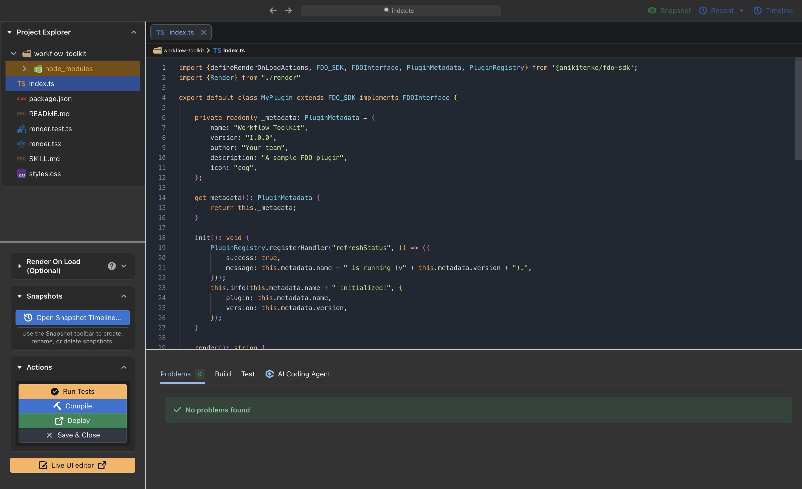

A home for your plugins
Build focused tools for the jobs you repeat. Keep their interfaces and workflows together in one desktop environment.
Explore plugin templatesFLEXDEVOPS / OPEN SOURCE
The desktop home for your DevOps tools. Build plugins, shape their UI, and automate the routine—all in a workspace you can make your own.
macOS · Windows · Linux

Plugin driven
Open source
Desktop native
CLI ready
01 / THE WORKSPACE
For developers and SREs who want a workspace that fits their job. FDO supplies the host, editor, and SDK. Plugins bring your workflows to life.
Build focused tools for the jobs you repeat. Keep their interfaces and workflows together in one desktop environment.
Explore plugin templatesWork in the Monaco-based editor, use SDK-aware AI assistance, and preview supported UI changes with Live UI.
Meet the coding assistantPlugin signing and explicit capability grants help you control access. Host-mediated actions use scoped policies for privileged operations.
Read the capability model02 / THE PLUGIN SYSTEM
Your ideas are the fuel. Plugins bring the fire. Start with a template, build with the SDK, and turn a repeated task into a tool that works your way.
Find your starting point
Have an idea, but need a hand?
The coding assistant
understands FDO’s SDK.
Scaffold a plugin with UI, styles, tests, and a development guide.
fdo init ./my-tool --template blank
Edit code and explore supported visual changes. Review your draft before applying it.
Explore Live UIValidate, test, sign, and deploy. Share plugin collections through GitOps repositories.
Read about GitOps03 / FOR THE TERMINAL PEOPLE
Scaffold a workspace, run tests, and watch your changes. Use JSON output for scripts and separate profiles for different environments.
First, enable fdo in
Settings → General inside the desktop app. Then
open a new terminal.
# Create your first plugin
fdo init ./my-tool --template blank
# Validate and run its tests
fdo validate ./my-tool
fdo test ./my-tool --json
# Watch changes and redeploy
fdo dev ./my-tool04 / MAKE YOURSELF AT HOME
Choose your platform on GitHub Releases. Release notes include version details, checksums, and signing status.
Apple Silicon & Intel
DMG / ZIPx64
Installer / Portablex64
AppImage / DEB / RPMFDO is preparing for its first release. Available builds will appear on GitHub Releases. You can also build from source. Prerelease builds may be unsigned; check their release notes.
KEEP EXPLORING
Read the docs, explore the SDK, or help shape what comes next.